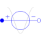
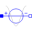

CosineVoltagePolyphase cosine voltage source |

|
Diagram
{kind=link}
Information
This information is part of the Modelica Standard Library maintained by the Modelica Association.
Contains m cosine voltage sources (Modelica.Electrical.Analog.Sources.CosineVoltage) with a default phase shift determined by symmetricOrientation.
Parameters (6)
| m |
Value: 3 Type: Integer Description: Number of phases |
|---|---|
| V |
Value: Type: Voltage[m] (V) Description: Amplitudes of cosine waves |
| phase |
Value: -Polyphase.Functions.symmetricOrientation(m) Type: Angle[m] (rad) Description: Phases of cosine waves |
| f |
Value: Type: Frequency[m] (Hz) Description: Frequencies of cosine waves |
| offset |
Value: zeros(m) Type: Voltage[m] (V) Description: Voltage offsets |
| startTime |
Value: zeros(m) Type: Time[m] (s) Description: Time offsets |
Connectors (2)
| plug_p |
Type: PositivePlug Description: Positive polyphase electrical plug with m pins |
|
|---|---|---|
| plug_n |
Type: NegativePlug Description: Negative polyphase electrical plug with m pins |
Components (1)
|  | cosineVoltage |
Type: CosineVoltage[m] |
|---|
Used in Examples (2)
|
Modelica.Magnetic.QuasiStatic.FundamentalWave.Examples.BasicMachines.InductionMachines Induction machine with squirrel cage started directly on line (DOL) |
|
|
Modelica.Magnetic.QuasiStatic.FundamentalWave.Examples.BasicMachines.SynchronousMachines Permanent magnet synchronous machine operated at mains with step torque load |